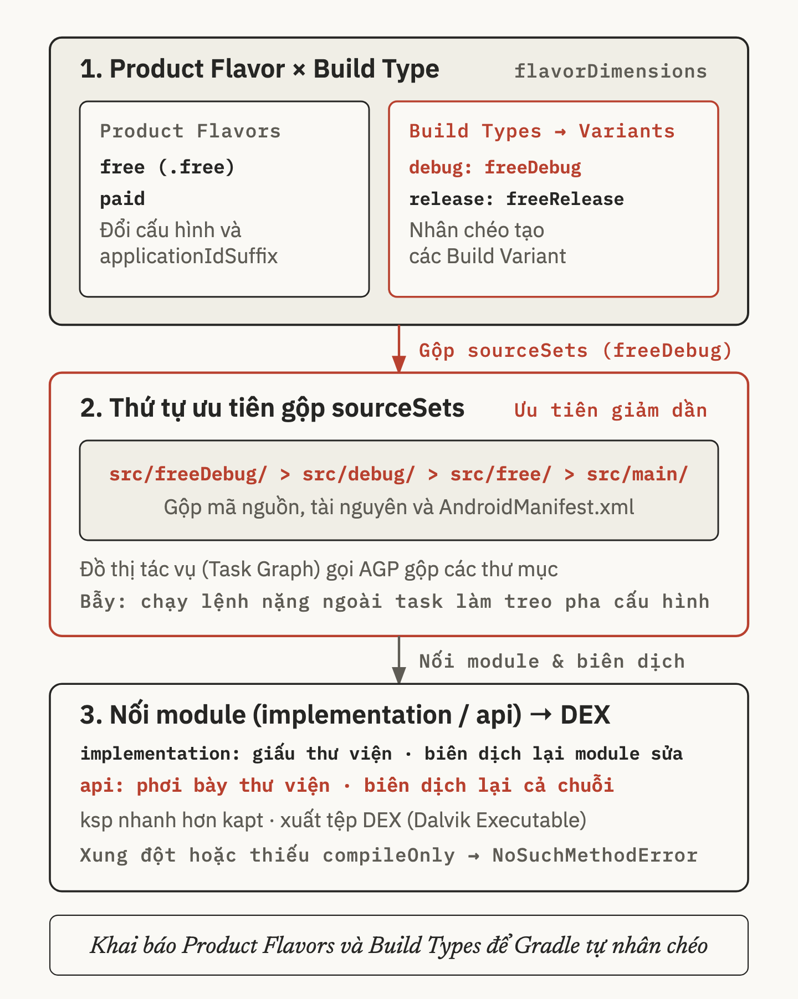

Gradle & build variant
Bản 30 giây
Khi cần bản thử nghiệm nối máy chủ nội bộ và bản thu phí, sửa tay địa chỉ mạng rồi chép thư mục dễ nhầm. Hệ thống Gradle giữ một mã nguồn chung, rồi tự ghép các cấu hình để xuất ra nhiều bản cài đặt khác nhau. Nhờ vậy, bạn cài song song bản thử nghiệm và bản chính thức trên cùng một điện thoại mà không đè lên nhau.
Cần biết trước
Vấn đề buộc nó ra đời
Trước năm 2013, lập trình viên Android biên dịch ứng dụng bằng công cụ Eclipse ADT hoặc tệp kịch bản Apache Ant. Khi cần thư viện ngoài, bạn phải tự tải tệp .jar bỏ vào thư mục libs/ và tự xử lý khi trùng phiên bản. Muốn làm thêm bản miễn phí cạnh bản trả phí, nhiều đội phải nhân bản cả dự án ra hai thư mục rời nhau.
Tháng 5 năm 2013 tại Google I/O, Google ra mắt Android Studio cùng hệ thống biên dịch dựa trên Gradle và Android Gradle Plugin (AGP). Công cụ mới tự tải thư viện từ kho mạng và sinh nhiều biến thể từ một mã nguồn. Tới cuối năm 2015, Eclipse ADT chính thức ngừng hỗ trợ.
Nó thực sự là cái gì
Gradle không phải là trình biên dịch biến mã Kotlin hay Java thành mã máy. Thực chất nó là bộ điều phối đồ thị tác vụ (Task Graph, chuỗi bước chạy theo thứ tự phụ thuộc). Nó gọi Android Gradle Plugin gộp mã nguồn theo từng biến thể (Build Variant) rồi giao cho trình biên dịch Kotlin và công cụ đóng gói làm việc.
Cơ chế

Mỗi Build Variant là tích số nhân chéo giữa một Product Flavor (như free, paid) thuộc chiều flavorDimensions với một Build Type (như debug, release). Với biến thể freeDebug, AGP gộp các sourceSets theo thứ tự ưu tiên giảm dần: src/freeDebug/ đè lên src/debug/, đè lên src/free/ rồi src/main/. Khi nối module, implementation giấu thư viện nội bộ để chỉ biên dịch lại module sửa, còn api phơi bày thư viện ra toàn chuỗi. Cuối cùng, mã nguồn được biên dịch thành tệp thực thi DEX (Dalvik Executable), gộp cùng tài nguyên và AndroidManifest.xml để đóng gói.
Đánh đổi
Chia dự án thành nhiều module và nhiều Build Variant giúp bạn tách biệt môi trường thử nghiệm và chỉ biên dịch lại phần vừa sửa. Đổi lại, mỗi lần mở dự án, Gradle tốn thêm RAM và thời gian chạy pha cấu hình để dựng đồ thị tác vụ.
Nguyên lý gốc
Tách mô tả "ứng dụng gồm những mảnh nào" ra khỏi quy trình lắp ráp. Nhờ đó, máy tự ghép thành nhiều sản phẩm từ một mã nguồn.
Key insight
Bạn không cấu hình trực tiếp một
Build Variant, mà chỉ khai báoProduct FlavorsvàBuild TypesđểGradletự nhân chéo ra biến thể.
Khuôn mẫu chuẩn
android {
flavorDimensions += "tier"
productFlavors {
create("free") {
dimension = "tier"
applicationIdSuffix = ".free"
}
}
buildTypes {
getByName("debug") { applicationIdSuffix = ".debug" }
}
}
Bẫy & ranh giới
Khai báo thư viện bằng api thay vì implementation làm lộ thư viện sang mọi module cha. Một sửa đổi nhỏ khi đó cũng bắt biên dịch lại cả chuỗi. Đừng chạy lệnh đọc tệp hay tính toán nặng ngoài thân hàm thực thi task trong build.gradle.kts, vì nó sẽ làm treo pha cấu hình. Khi hai thư viện xung đột phiên bản hoặc dùng compileOnly mà quên kiểm tra lúc chạy, ứng dụng sẽ sập với NoSuchMethodError hoặc ClassNotFoundException.
Câu hỏi thực chiến
Hỏi: Khai báo thư viện bằng api và implementation khác nhau thế nào khi dự án có nhiều module?
Nếu module A gắn thư viện mạng bằng implementation, module B phụ thuộc vào A sẽ không nhìn thấy các lớp của thư viện đó. Nhờ vậy khi thư viện mạng đổi phiên bản, Gradle chỉ biên dịch lại một mình module A. Ngược lại, dùng api sẽ phơi bày thư viện mạng sang module B và bắt các module phía trên biên dịch lại theo.
Hỏi: Làm sao cài bản debug và bản release của cùng một ứng dụng lên chung một chiếc điện thoại?
Android phân biệt các ứng dụng trên máy bằng chuỗi định danh applicationId. Bạn chỉ cần thêm dòng applicationIdSuffix = ".debug" vào khối debug trong buildTypes. Lúc đó bản thử nghiệm sẽ mang định danh mới và nằm cạnh bản chính thức mà không ghi đè lên nhau.
Hỏi: Vì sao nên chuyển các thư viện sinh mã như Room hay Hilt từ kapt sang ksp?
Vì kapt buộc phải sinh các tệp vỏ Java trung gian rồi mới chạy bộ xử lý chú thích, làm chậm thời gian biên dịch. Còn ksp (Kotlin Symbol Processing) đọc trực tiếp cây cú pháp Kotlin mà không sinh mã Java giả, giúp bước biên dịch nhanh hơn hẳn.
Ý bắt buộc khi giải thích lại
- Giải thích được công thức nhân chéo
Product FlavorsxBuild Types=Build Variantsvà cách dùngapplicationIdSuffix. - Nêu đúng thứ tự ưu tiên gộp thư mục mã nguồn (
sourceSets) từ biến thể cụ thể vềsrc/main/. - Phân biệt được phạm vi lộ thư viện và tốc độ biên dịch lại giữa
implementation,api,compileOnlyvàksp. - Viết lại được khuôn mẫu chuẩn từ trí nhớ.
Nguồn
- Configure your build — Android Developers
- Configure build variants — Android Developers
- Add build dependencies — Android Developers